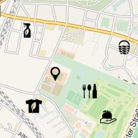

Welcome at the Mother of Many Maps
Here you can find some maps generated out of the TransforMap dataset-
Needs-Based Map

Explore the Map based on Needs -
Political Map

View the different identities -
Green Map

Go Green with TransforMap -
Organic Map

Be organic! -
Regional Map
Be regional!